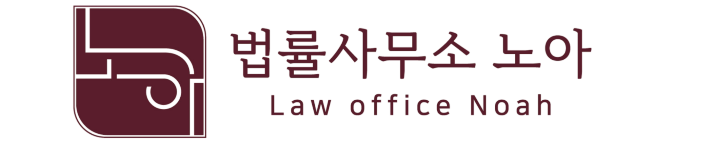

전체 구조를 먼저 봅니다
사건의 쟁점, 위험, 비용, 시간을 함께 고려하여 해결 방향을 정리합니다.

NOAH APPROACH
사건의 쟁점, 위험, 비용, 시간을 함께 고려하여 해결 방향을 정리합니다.
감정적인 대응보다 실제로 도움이 되는 절차와 선택지를 안내합니다.
복잡한 법률문제를 의뢰인이 이해할 수 있는 언어로 설명합니다.
PRACTICE AREAS
생활과 가까운 법률문제부터 분쟁 해결이 필요한 사건까지 대응합니다.
계약분쟁 · 대여금 · 손해배상 · 채권회수
매매 · 임대차 · 명도 · 경계·공사 분쟁
상속재산분할 · 유언 · 유류분 · 기여분
재산분할 · 양육권 · 양육비 · 친권
고소·고발 · 경찰조사 전 상담 · 합의 대응
학폭위 · 학생·학부모 대응 · 절차 자문
English consultation available

대표변호사 프로필 사진 영역
ATTORNEY
법률문제는 단순히 법률조항만으로 해결되지 않습니다. 의뢰인이 처한 상황과 현실적인 목표를 함께 고려해야 좋은 해결책이 나올 수 있습니다.
법률사무소 노아는 사건의 전체 구조를 먼저 파악하고, 가장 현실적이고 효과적인 해결 방향을 제시합니다.
복잡한 법률문제를 이해하기 쉬운 언어로 설명하고, 의뢰인이 충분히 납득할 수 있는 방향으로 사건을 진행합니다.
INSIGHT
블로그와 인스타그램을 통해 생활 속 법률문제를 쉽고 정확하게 설명합니다.
CONTACT
상담은 예약제로 운영됩니다. 구체적인 사실관계 검토가 필요한 법률상담은 유료 상담으로 진행됩니다.